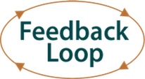

11 cosas sobre DevOps (10): Mi segundo patrón DevOps favorito
La penúltima entrega de Gene Kim, consistente en su segundo patrón favorito, refleja la importancia de la Segunda Vía. El inicio del bucle de retroalimentación, su importancia y algunas veladas sugerencias de cómo conseguirlo, son el contenido principal. Basándose en otro caso real, muestra cómo, implicando a Desarrollo en la atención y resolución de los problemas causados por la introducción de nuevas funcionalidades, se puede reducir la duración de las interrupciones o degradaciones de servicio, mejorando la experiencia de los usuarios finales y de los clientes.
10. Mi segundo patrón DevOps favorito
Una de mis citas favoritas es de Patrick Lightbody, antiguo CEO de BrowserMob, que dijo: 'Hemos descubierto que cuando despertamos a los desarrolladores a las 2 de la madrugada, se genera un bucle de retroalimentación fenomenal. Los problemas se solucionan mucho más rápido que en ningún otro momento'.
Esto subraya el problema de que Desarrollo suba su código el viernes a última hora, felicitándose en el aparcamiento de camino a casa, dejando al equipo de Operaciones el trabajo de arreglar el desastre durante todo el fin de semana. Peor aún, los defectos y errores conocidos son recurrentes en producción, forzando al equipo de Operaciones a estar contínuamente apagando fuegos, sin que la razón del problema se arregle nunca porque Desarrollo se mantiene enfocado en el desarrollo de nuevas funcionalidades.
Un elemento importante de la Segunda Vía es acortar y amplificar los bucles de retroalimentación, y de acercar a Desarrollo a la experiencia del cliente, que incluye tanto al equipo de Operaciones como a los usuarios finales del servicio entregado.
La simetría en esto es destacable: El primer patrón favorito sobre hacer que los entornos estén disponibles temprano consiste principalmente en incrustar Operaciones en Desarrollo, mientras que el segundo patrón favorito consiste en poner Desarrollo en Operaciones.
Aquí, ponemos Desarrollo en la cadena de escalado de Operaciones, posiblemente poniéndolos en un tercer nivel de soporte, o incluso haciendo a Desarrollo completamente responsable del éxito del despliegue del código, ya sea echándolo atrás o arreglando los problemas hasta que el servicio sea restaurado al cliente.
La meta no es reemplazar a Operaciones por Desarrollo. En su lugar, consiste en garantizar que Desarrollo vea los efectos de su trabajo y de sus cambios, y de que vivan la realidad de Operaciones lo suficiente para que estén motivados para arreglar los problemas rápidamente para ayudar con el alcance de los logros globales.